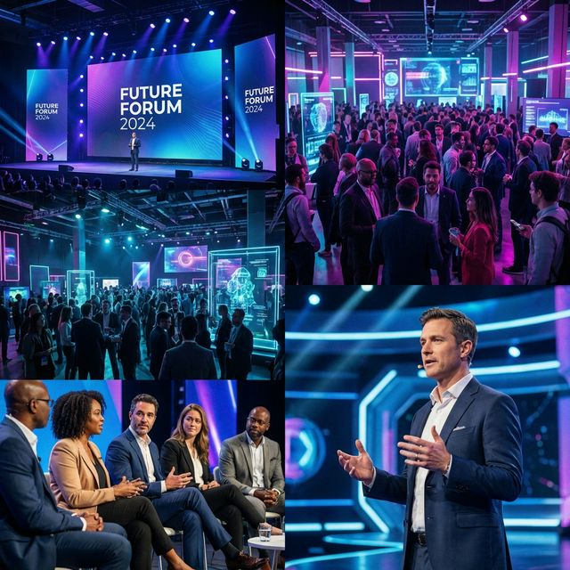

History
Founded in 2014, TechCon began as a small gathering of hardware enthusiasts in a local community center. Over the past decade, it has evolved into the world's most influential technology conference, attracting visionaries and disruptors from every corner of the globe. From the launch of pioneering AI frameworks to the debut of revolutionary consumer electronics, TechCon has been the stage for the innovations that define our modern world.
